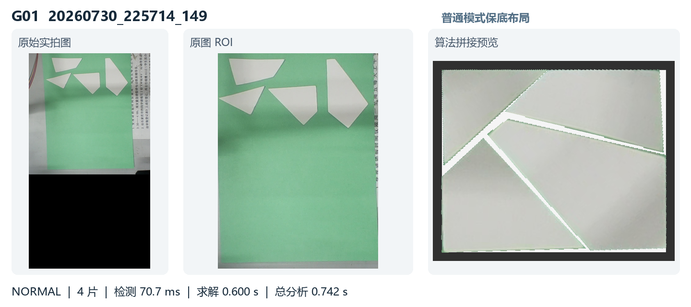G01 · 20260730_225714_149BEST总分析中位数 0.742 s 范围 0.741–0.743 s 峰值 RSS 108.2 MiB三次状态与输出图像一致。展示总分析耗时居中的第 3 次结果。原始 PNG拼接 PNG原始记录
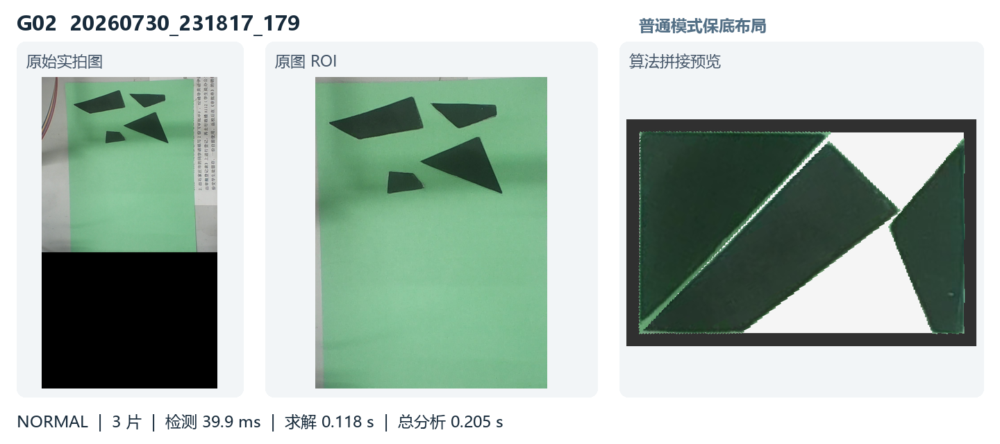G02 · 20260730_231817_179BEST总分析中位数 0.205 s 范围 0.205–0.205 s 峰值 RSS 82.1 MiB三次状态与输出图像一致。展示总分析耗时居中的第 2 次结果。原始 PNG拼接 PNG原始记录
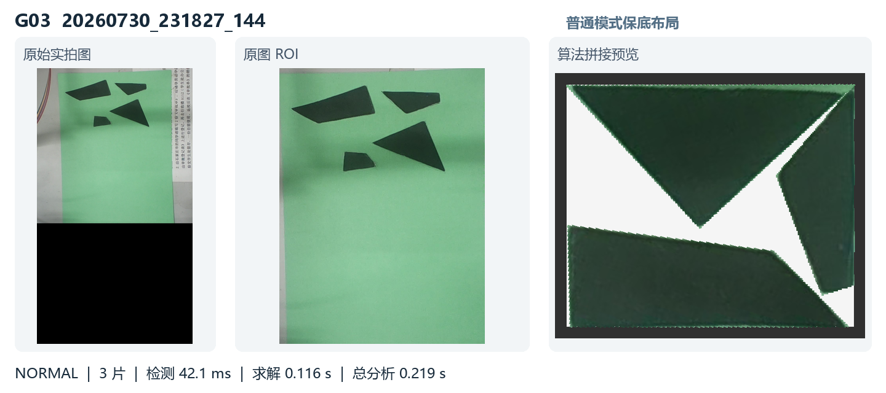G03 · 20260730_231827_144BEST总分析中位数 0.219 s 范围 0.219–0.221 s 峰值 RSS 82.1 MiB三次状态与输出图像一致。展示总分析耗时居中的第 1 次结果。原始 PNG拼接 PNG原始记录
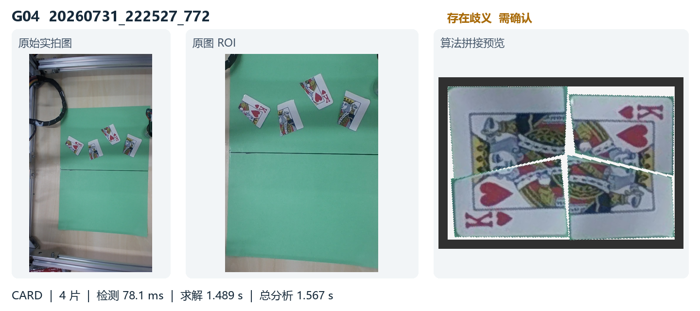G04 · 20260731_222527_772AMBIGUOUS总分析中位数 1.567 s 范围 1.560–1.570 s 峰值 RSS 99.8 MiB三次状态与输出图像一致。展示总分析耗时居中的第 2 次结果。原始 PNG拼接 PNG原始记录
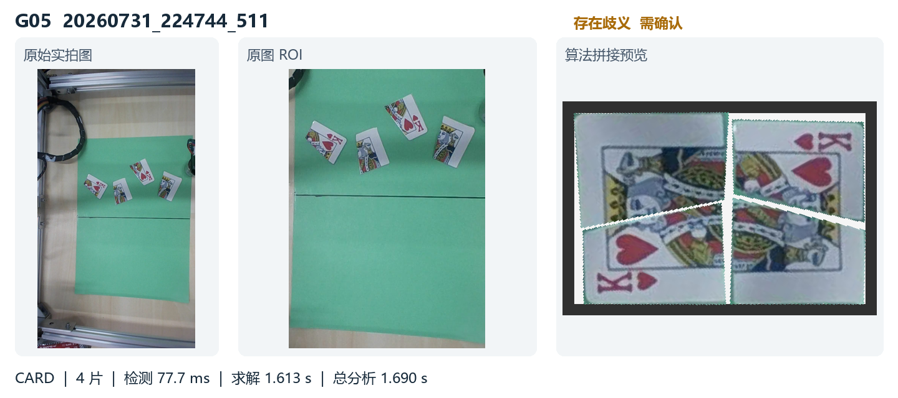G05 · 20260731_224744_511AMBIGUOUS总分析中位数 1.690 s 范围 1.679–1.694 s 峰值 RSS 100.8 MiB三次状态与输出图像一致。展示总分析耗时居中的第 3 次结果。原始 PNG拼接 PNG原始记录
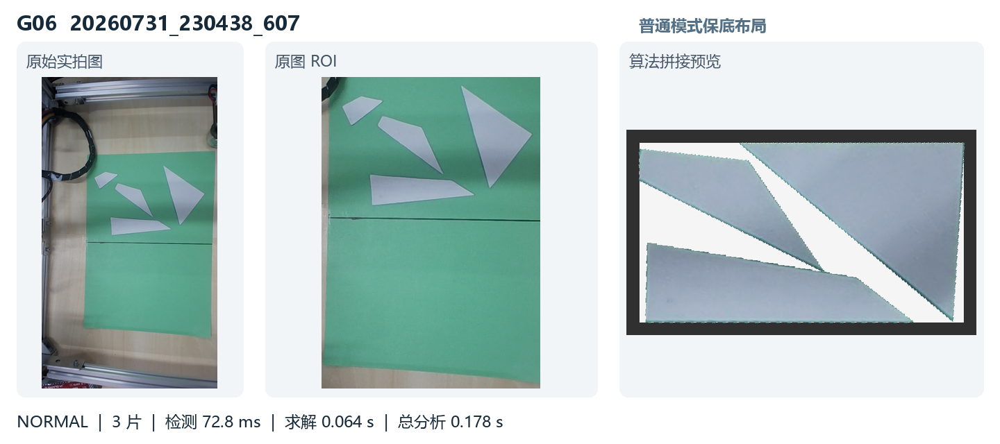G06 · 20260731_230438_607BEST总分析中位数 0.178 s 范围 0.178–0.179 s 峰值 RSS 94.2 MiB三次状态与输出图像一致。展示总分析耗时居中的第 3 次结果。原始 PNG拼接 PNG原始记录
G07 · 20260731_230559_738BEST总分析中位数 0.182 s 范围 0.180–0.183 s 峰值 RSS 94.3 MiB三次状态与输出图像一致。展示总分析耗时居中的第 2 次结果。原始 PNG拼接 PNG原始记录
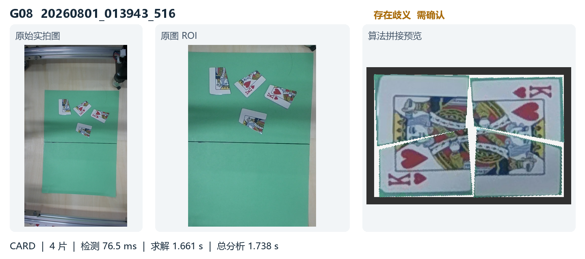G08 · 20260801_013943_516AMBIGUOUS总分析中位数 1.738 s 范围 1.735–1.740 s 峰值 RSS 100.3 MiB三次状态与输出图像一致。展示总分析耗时居中的第 3 次结果。原始 PNG拼接 PNG原始记录
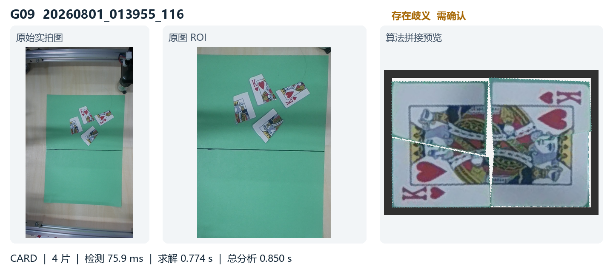G09 · 20260801_013955_116AMBIGUOUS总分析中位数 0.850 s 范围 0.845–0.853 s 峰值 RSS 94.2 MiB三次状态与输出图像一致。展示总分析耗时居中的第 2 次结果。原始 PNG拼接 PNG原始记录
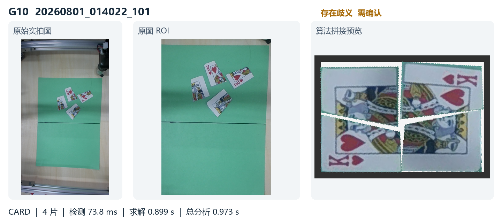G10 · 20260801_014022_101AMBIGUOUS总分析中位数 0.973 s 范围 0.972–0.975 s 峰值 RSS 94.2 MiB三次状态与输出图像一致。展示总分析耗时居中的第 3 次结果。原始 PNG拼接 PNG原始记录
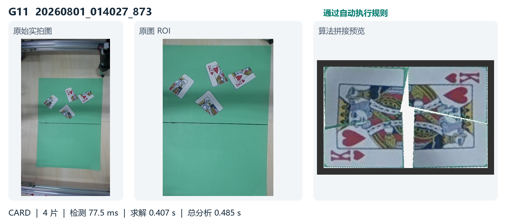G11 · 20260801_014027_873VERIFIED总分析中位数 0.485 s 范围 0.485–0.498 s 峰值 RSS 94.2 MiB三次状态与输出图像一致。展示总分析耗时居中的第 2 次结果。原始 PNG拼接 PNG原始记录
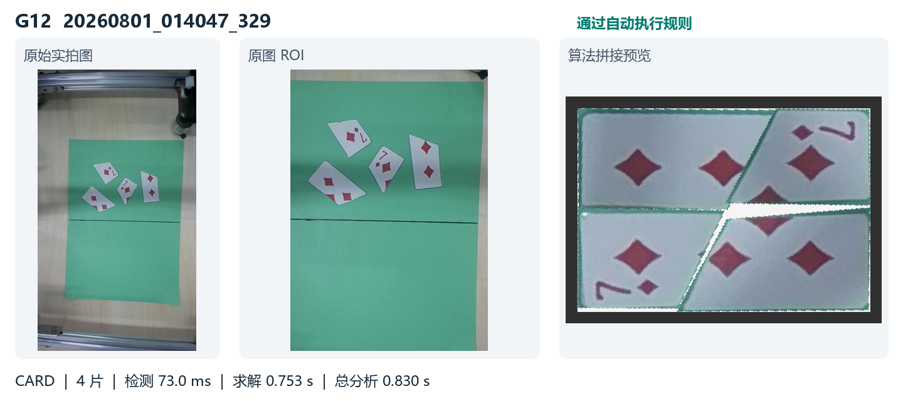G12 · 20260801_014047_329VERIFIED总分析中位数 0.830 s 范围 0.826–0.832 s 峰值 RSS 94.2 MiB三次状态与输出图像一致。展示总分析耗时居中的第 3 次结果。原始 PNG拼接 PNG原始记录
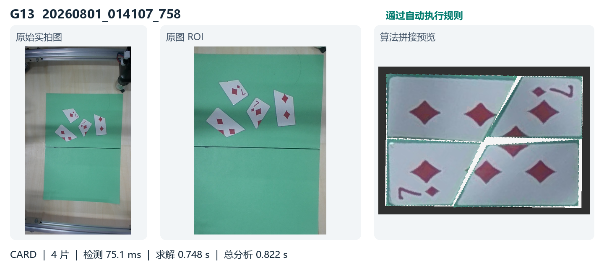G13 · 20260801_014107_758VERIFIED总分析中位数 0.822 s 范围 0.819–0.826 s 峰值 RSS 94.2 MiB三次状态与输出图像一致。展示总分析耗时居中的第 1 次结果。原始 PNG拼接 PNG原始记录
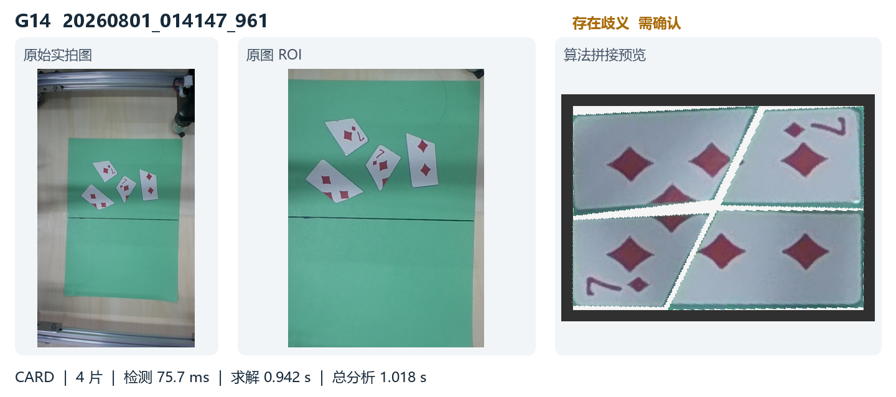G14 · 20260801_014147_961AMBIGUOUS总分析中位数 1.018 s 范围 1.017–1.045 s 峰值 RSS 95.7 MiB三次状态与输出图像一致。展示总分析耗时居中的第 2 次结果。原始 PNG拼接 PNG原始记录
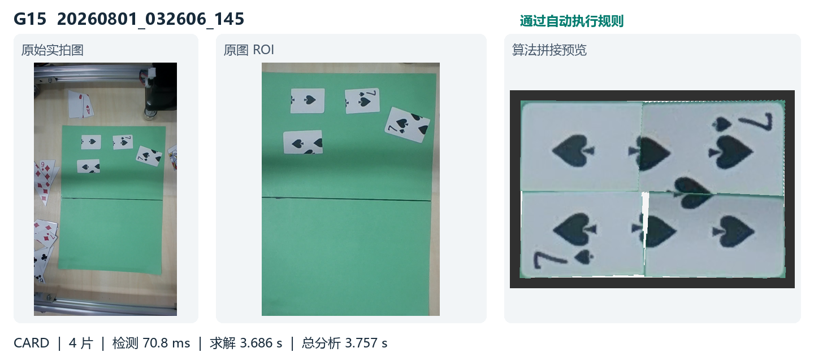G15 · 20260801_032606_145VERIFIED总分析中位数 3.757 s 范围 3.751–3.791 s 峰值 RSS 94.2 MiB三次状态与输出图像一致。展示总分析耗时居中的第 1 次结果。原始 PNG拼接 PNG原始记录
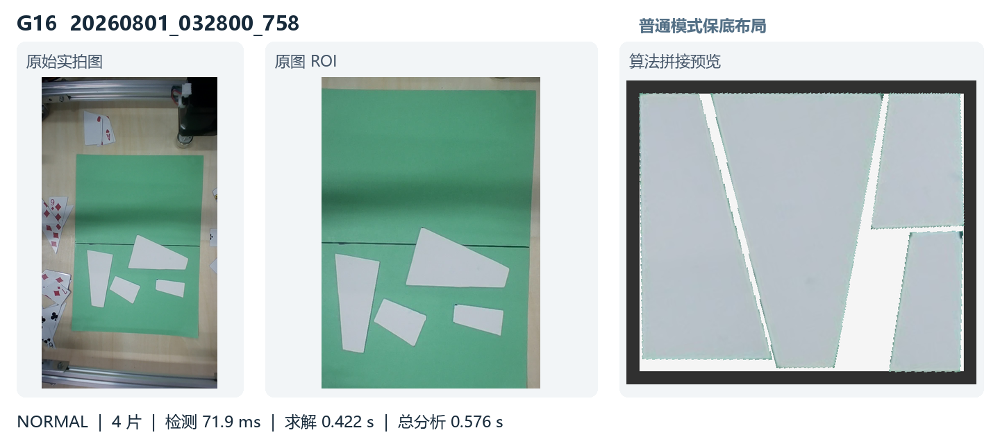G16 · 20260801_032800_758BEST总分析中位数 0.576 s 范围 0.576–0.582 s 峰值 RSS 110.3 MiB三次状态与输出图像一致。展示总分析耗时居中的第 1 次结果。原始 PNG拼接 PNG原始记录
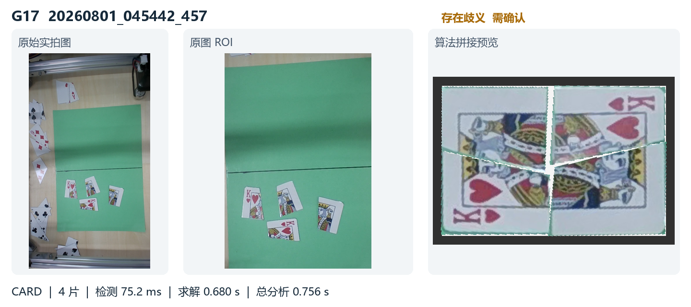G17 · 20260801_045442_457AMBIGUOUS总分析中位数 0.756 s 范围 0.752–0.756 s 峰值 RSS 93.5 MiB三次状态与输出图像一致。展示总分析耗时居中的第 2 次结果。原始 PNG拼接 PNG原始记录
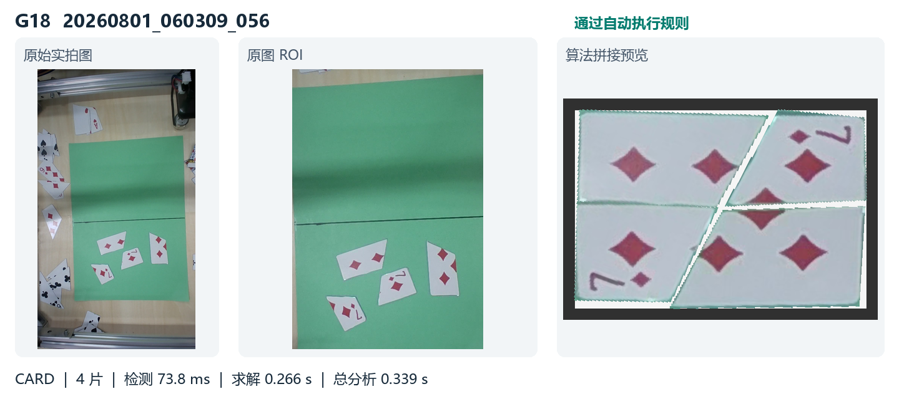G18 · 20260801_060309_056VERIFIED总分析中位数 0.339 s 范围 0.339–0.342 s 峰值 RSS 93.5 MiB三次状态与输出图像一致。展示总分析耗时居中的第 2 次结果。原始 PNG拼接 PNG原始记录
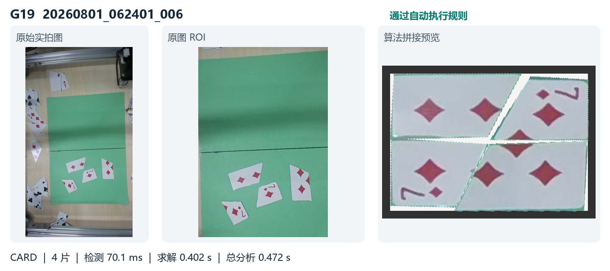G19 · 20260801_062401_006VERIFIED总分析中位数 0.472 s 范围 0.471–0.474 s 峰值 RSS 93.5 MiB三次状态与输出图像一致。展示总分析耗时居中的第 2 次结果。原始 PNG拼接 PNG原始记录
G20 · 20260801_062529_588VERIFIED总分析中位数 0.267 s 范围 0.266–0.268 s 峰值 RSS 93.5 MiB三次状态与输出图像一致。展示总分析耗时居中的第 1 次结果。原始 PNG拼接 PNG原始记录
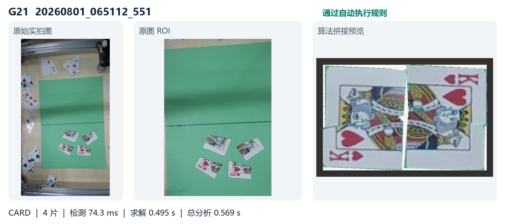G21 · 20260801_065112_551VERIFIED总分析中位数 0.569 s 范围 0.568–0.570 s 峰值 RSS 93.5 MiB三次状态与输出图像一致。展示总分析耗时居中的第 1 次结果。原始 PNG拼接 PNG原始记录
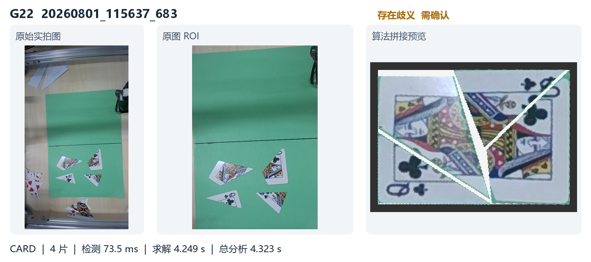G22 · 20260801_115637_683AMBIGUOUS总分析中位数 4.323 s 范围 4.304–4.333 s 峰值 RSS 111.8 MiB三次状态与输出图像一致。展示总分析耗时居中的第 3 次结果。原始 PNG拼接 PNG原始记录
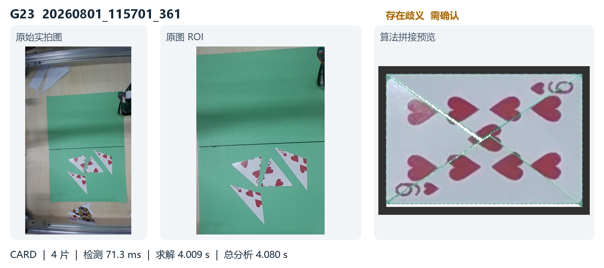G23 · 20260801_115701_361AMBIGUOUS总分析中位数 4.080 s 范围 4.076–4.083 s 峰值 RSS 93.5 MiB三次状态与输出图像一致。展示总分析耗时居中的第 3 次结果。原始 PNG拼接 PNG原始记录
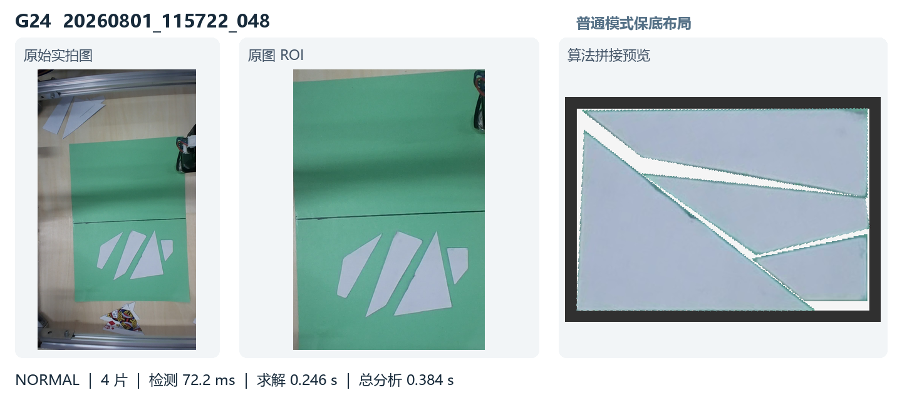G24 · 20260801_115722_048BEST总分析中位数 0.384 s 范围 0.383–0.386 s 峰值 RSS 107.2 MiB三次状态与输出图像一致。展示总分析耗时居中的第 1 次结果。原始 PNG拼接 PNG原始记录
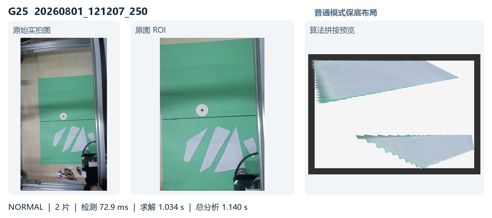G25 · 20260801_121207_250BEST总分析中位数 1.140 s 范围 1.139–1.143 s 峰值 RSS 93.5 MiB三次状态与输出图像一致。展示总分析耗时居中的第 3 次结果。原始 PNG拼接 PNG原始记录
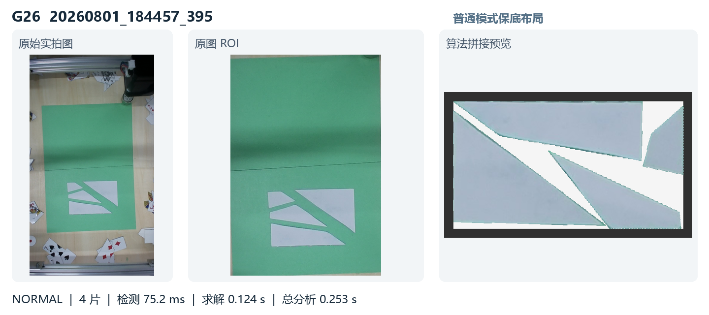G26 · 20260801_184457_395BEST总分析中位数 0.253 s 范围 0.252–0.255 s 峰值 RSS 98.3 MiB三次状态与输出图像一致。展示总分析耗时居中的第 2 次结果。原始 PNG拼接 PNG原始记录
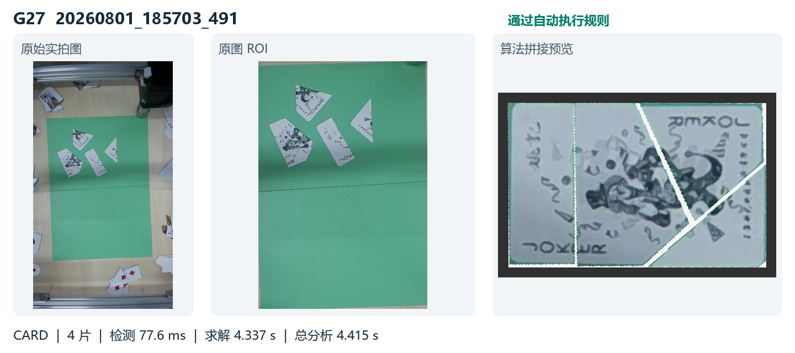G27 · 20260801_185703_491VERIFIED总分析中位数 4.415 s 范围 4.390–4.476 s 峰值 RSS 96.8 MiB三次状态与输出图像一致。展示总分析耗时居中的第 3 次结果。原始 PNG拼接 PNG原始记录
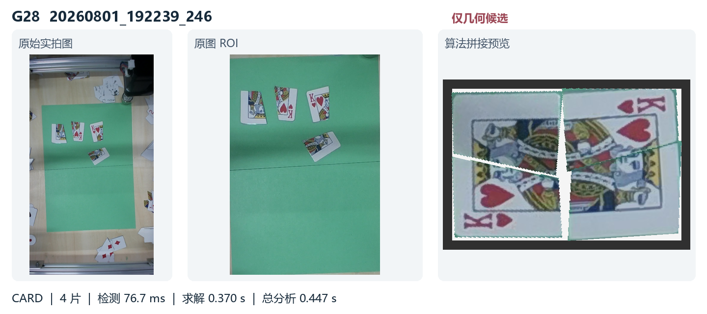G28 · 20260801_192239_246GEOMETRY_ONLY总分析中位数 0.447 s 范围 0.445–0.447 s 峰值 RSS 93.5 MiB三次状态与输出图像一致。展示总分析耗时居中的第 1 次结果。原始 PNG拼接 PNG原始记录
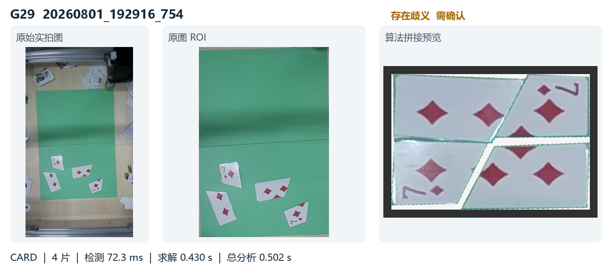G29 · 20260801_192916_754AMBIGUOUS总分析中位数 0.502 s 范围 0.502–0.505 s 峰值 RSS 93.5 MiB三次状态与输出图像一致。展示总分析耗时居中的第 2 次结果。原始 PNG拼接 PNG原始记录
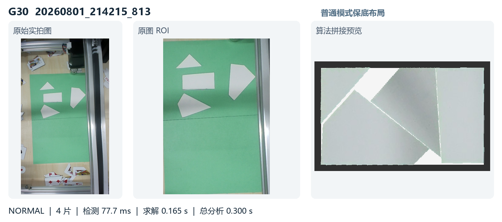G30 · 20260801_214215_813BEST总分析中位数 0.300 s 范围 0.300–0.302 s 峰值 RSS 94.2 MiB三次状态与输出图像一致。展示总分析耗时居中的第 3 次结果。原始 PNG拼接 PNG原始记录
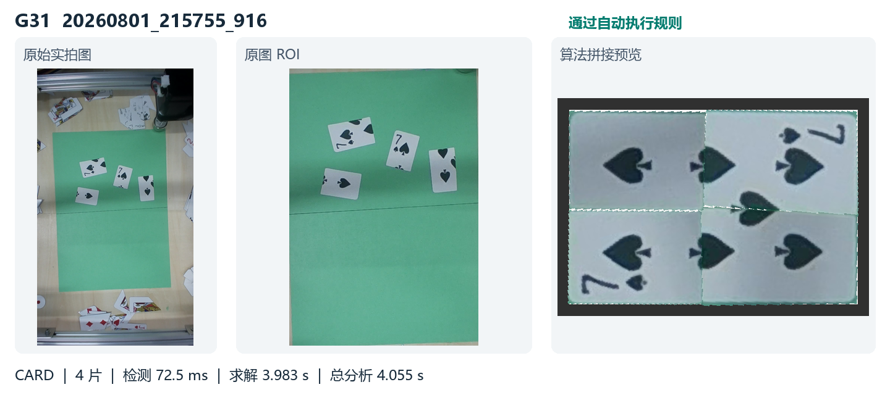G31 · 20260801_215755_916VERIFIED总分析中位数 4.055 s 范围 4.051–4.056 s 峰值 RSS 93.5 MiB三次状态与输出图像一致。展示总分析耗时居中的第 3 次结果。原始 PNG拼接 PNG原始记录
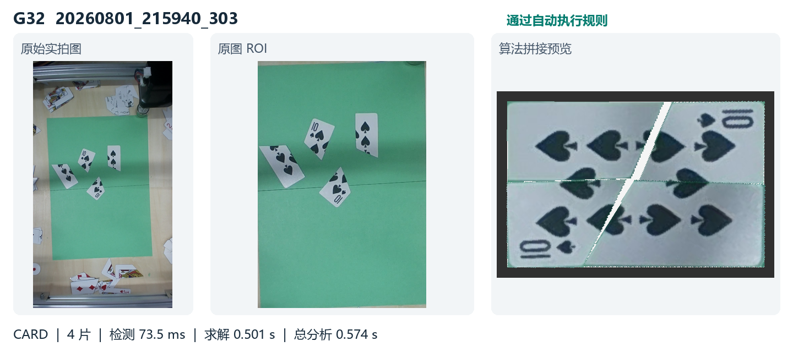G32 · 20260801_215940_303VERIFIED总分析中位数 0.574 s 范围 0.574–0.575 s 峰值 RSS 93.5 MiB三次状态与输出图像一致。展示总分析耗时居中的第 3 次结果。原始 PNG拼接 PNG原始记录
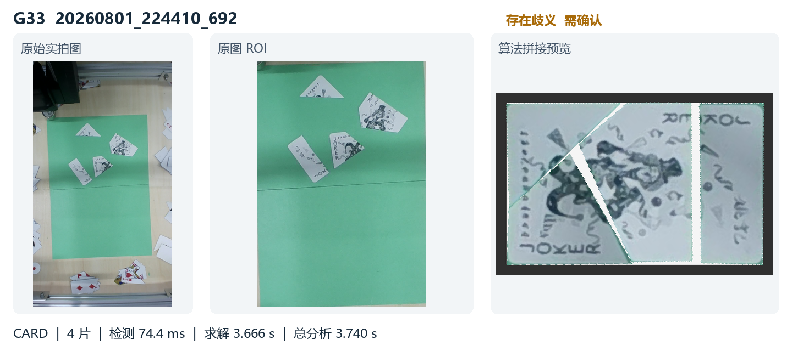G33 · 20260801_224410_692AMBIGUOUS总分析中位数 3.740 s 范围 3.739–3.753 s 峰值 RSS 96.7 MiB三次状态与输出图像一致。展示总分析耗时居中的第 3 次结果。原始 PNG拼接 PNG原始记录
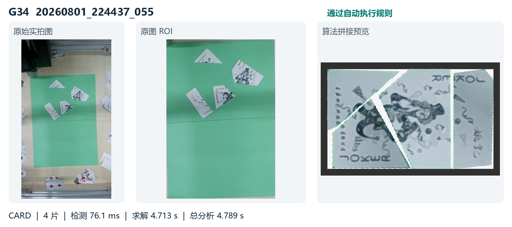G34 · 20260801_224437_055VERIFIED总分析中位数 4.789 s 范围 4.788–4.789 s 峰值 RSS 126.2 MiB三次状态与输出图像一致。展示总分析耗时居中的第 1 次结果。原始 PNG拼接 PNG原始记录
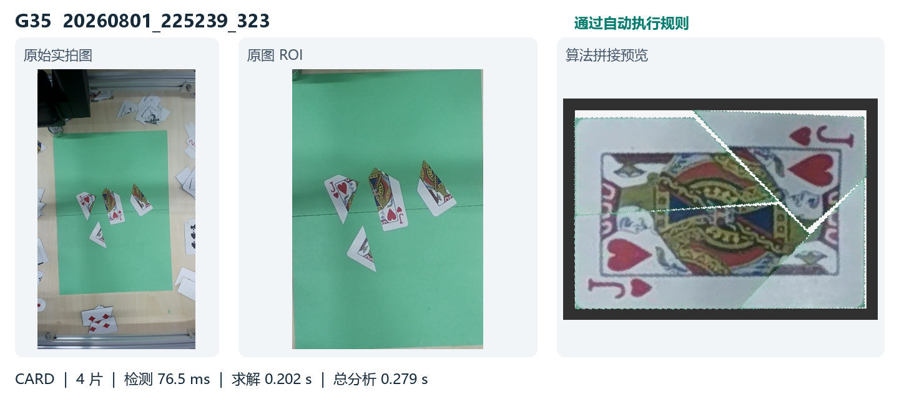G35 · 20260801_225239_323VERIFIED总分析中位数 0.279 s 范围 0.276–0.280 s 峰值 RSS 93.5 MiB三次状态与输出图像一致。展示总分析耗时居中的第 3 次结果。原始 PNG拼接 PNG原始记录
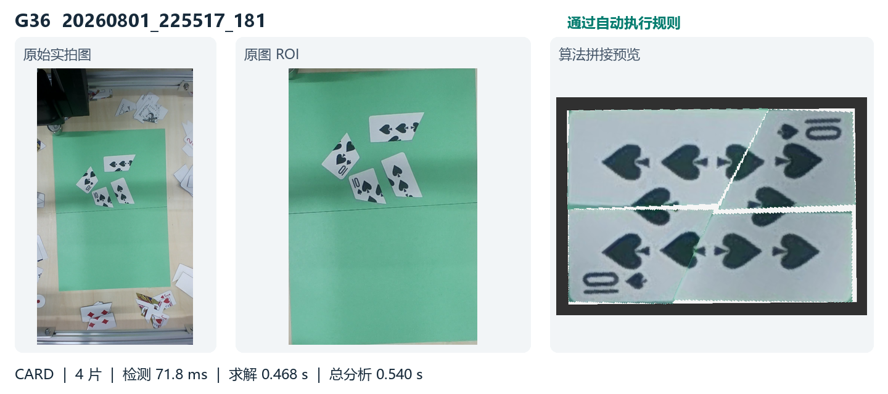G36 · 20260801_225517_181VERIFIED总分析中位数 0.540 s 范围 0.536–0.541 s 峰值 RSS 93.5 MiB三次状态与输出图像一致。展示总分析耗时居中的第 1 次结果。原始 PNG拼接 PNG原始记录
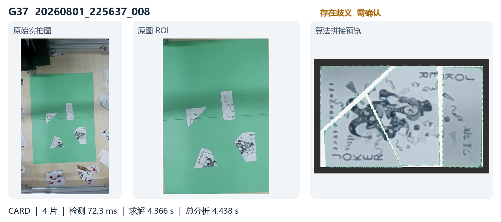G37 · 20260801_225637_008AMBIGUOUS总分析中位数 4.438 s 范围 4.412–4.446 s 峰值 RSS 97.2 MiB三次状态与输出图像一致。展示总分析耗时居中的第 3 次结果。原始 PNG拼接 PNG原始记录
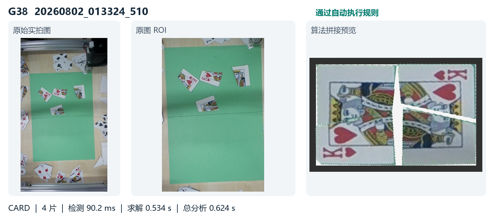G38 · 20260802_013324_510VERIFIED总分析中位数 0.624 s 范围 0.624–0.624 s 峰值 RSS 99.3 MiB三次状态与输出图像一致。展示总分析耗时居中的第 3 次结果。原始 PNG拼接 PNG原始记录
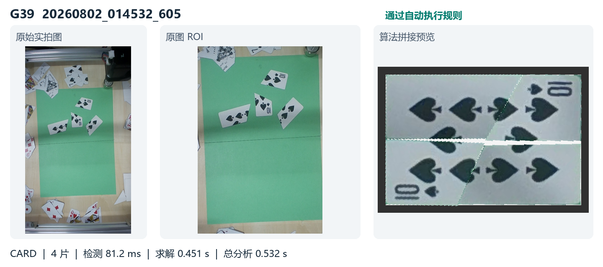G39 · 20260802_014532_605VERIFIED总分析中位数 0.532 s 范围 0.532–0.536 s 峰值 RSS 99.3 MiB三次状态与输出图像一致。展示总分析耗时居中的第 3 次结果。原始 PNG拼接 PNG原始记录
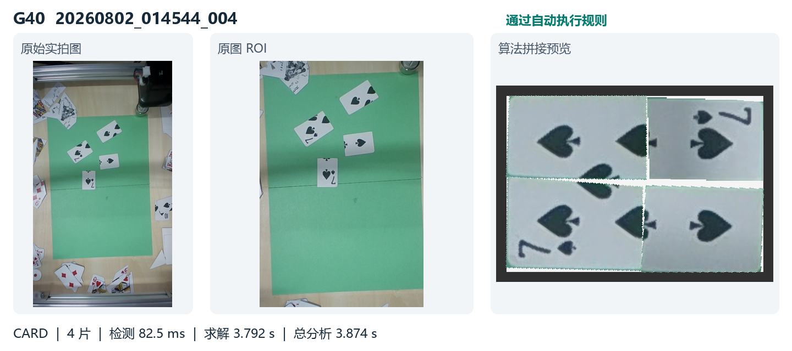G40 · 20260802_014544_004VERIFIED总分析中位数 3.874 s 范围 3.860–3.968 s 峰值 RSS 99.3 MiB三次状态与输出图像一致。展示总分析耗时居中的第 3 次结果。原始 PNG拼接 PNG原始记录
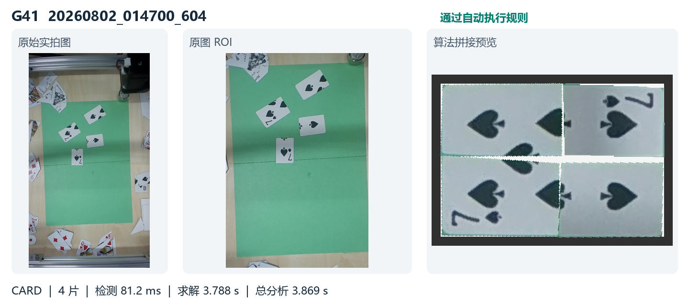G41 · 20260802_014700_604VERIFIED总分析中位数 3.869 s 范围 3.869–3.869 s 峰值 RSS 99.3 MiB三次状态与输出图像一致。展示总分析耗时居中的第 1 次结果。原始 PNG拼接 PNG原始记录
G42 · 20261016_213503_271AMBIGUOUS总分析中位数 6.513 s 范围 6.509–6.549 s 峰值 RSS 103.4 MiB三次状态与输出图像一致。展示总分析耗时居中的第 2 次结果。原始 PNG拼接 PNG原始记录
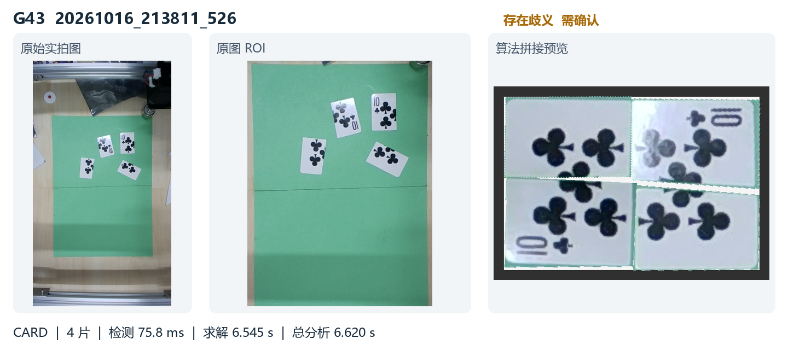G43 · 20261016_213811_526AMBIGUOUS总分析中位数 6.620 s 范围 6.575–6.717 s 峰值 RSS 103.4 MiB三次状态与输出图像一致。展示总分析耗时居中的第 2 次结果。原始 PNG拼接 PNG原始记录